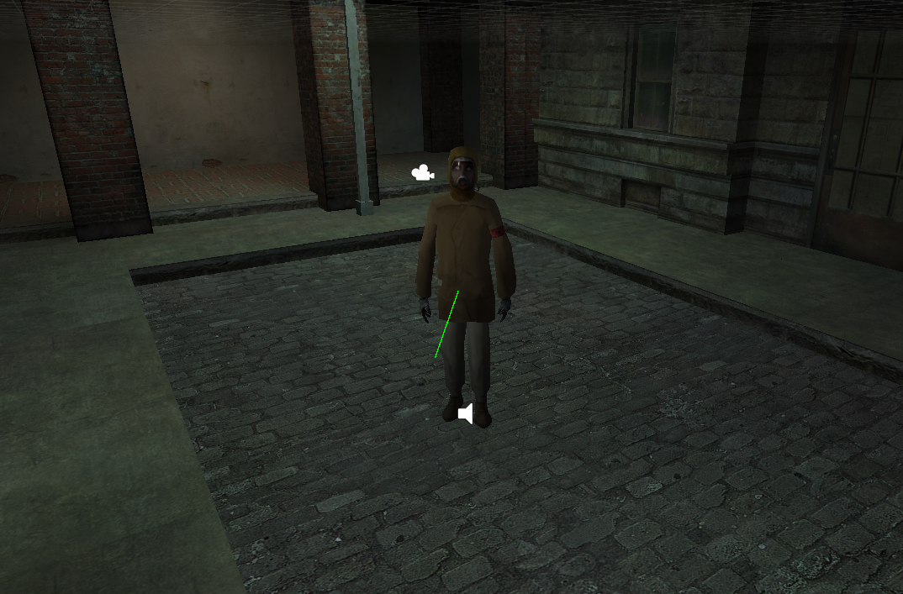
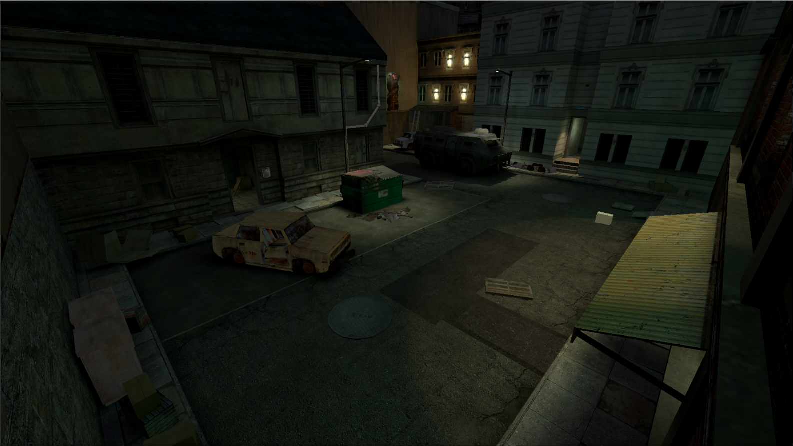
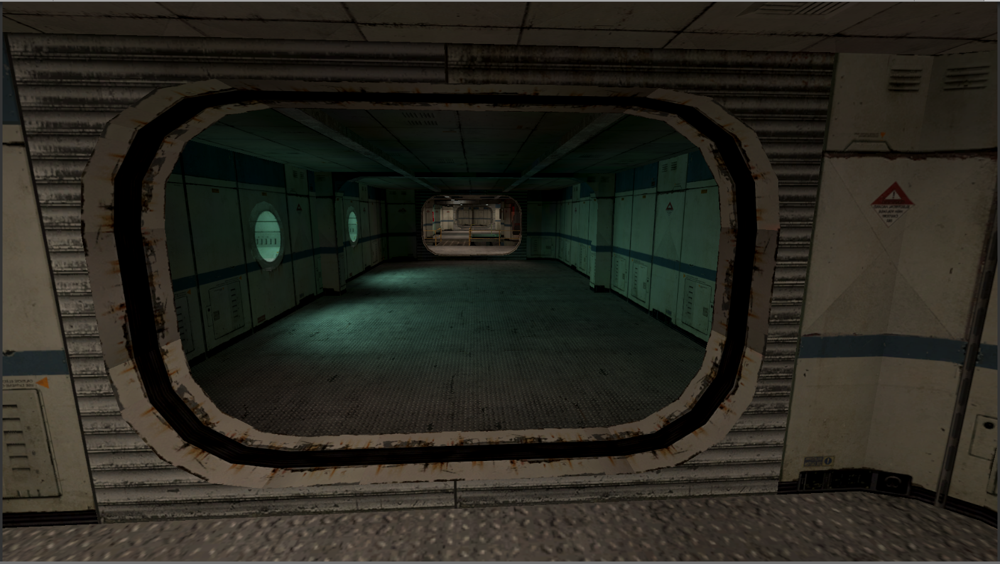
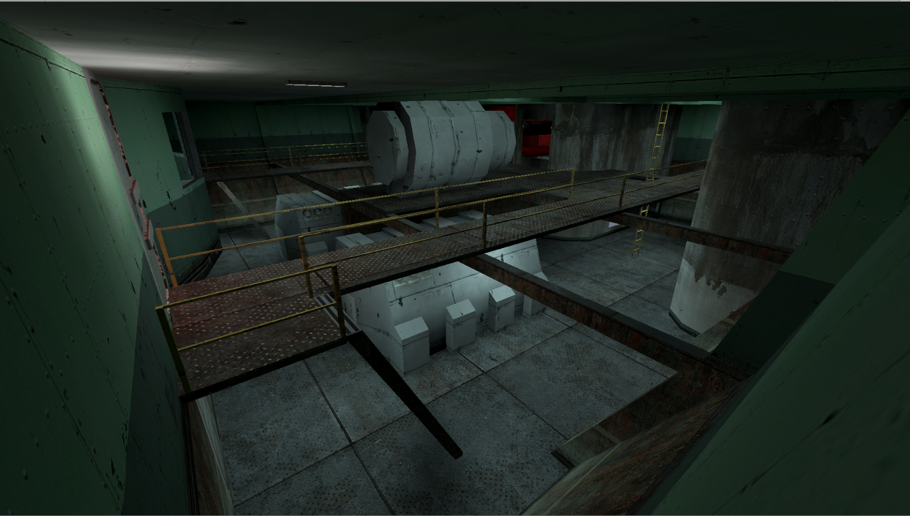

Source to Unity
English Page
Source to Unity
lewa-j'nin Unity Source Tools projesi
üzerine kurulu olan bir projedir, birçok iyileştirmeler ile:
- Harita varlıkları yüklenebiliyor
- Source oyun motoruna benzer ışıklandırma
- Haritada input-output olayları desteği
- Soundscript yükleyici
- Koreografi yükleyici
- WAV dosyasından otomatik dudak senkronizasyonu
Fotoğraflar




Videolar